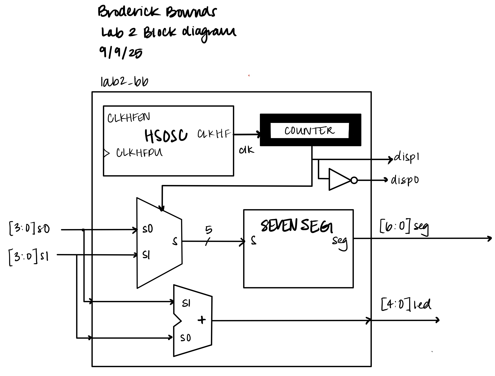

Multiplexing Seven Segment Display
Introduction
In this lab, a time-multiplexed display system was implemented using an FPGA Upduino Board to drive a dual seven-segment display with a single decoder module. The system displayed two independent hexadecimal values sourced from two DIP switches and showed their sum on five LEDs. The design utilized transistor-based current control such as PNP transistors to safely drive the common anodes of the displays, ensuring proper brightness and avoiding bleeding or ghosting.
Design and Testing Methodology
The design included the iCE FPGA’s high-speed osciallator (HSOSC) divided down by a counter to slow down the multiplexing clock. The slow clock toggles between enabling the left or right digit by activating its common anode transistor whiel routing the correspodnign 4-bit input (s0 or s1) into the seven segment decoder. If too fast or slow then there would be flickering or the two numbers would bleed together.
The outputs of the DIP swithes provided the two hexadecimal values (s0 and s1). These values are added and the (max number is 30, 5-bit wide) was displayed on five external LEDs. The seven segment require additonal transistor circuitry to handle the higher current of the common anode pins, since a FPGA pin cannot source the needed current (~8mA).
FPGA Design
The FPGA design for this lab was constructed in a modular and hierarchical method to meet teh multiplexed display instructions. The top level module lab2_bb coordinated the system while sevenseg provided the specific functionality.
| Signal Name | Type | Details |
|---|---|---|
[3:0] s0, s1 |
input | DIP switches |
[5:0] led |
output | LEDs (the sum of s0 and s1) |
[6:0] seg |
output | common anode outputs on 7-segment display |
disp0, disp1 |
internal | the “enable” on the mux taking in s0 and s1 as inputs |
There is a top level module lab2_bb that instaniates the iCE40 oscillator and uses lab2_bbtb to verify simulation. The modules divides frequency using a 25-bit counter and have it “drive high” at the 19th bit (or when counter ==(2.^19)). This toggles a select signal select_mux to switch between the two hexadecimal inputs. Then it assigns the sum out (assign led = s0 + s1). Then control the digit enable signals disp0 and disp1 to ensure one display is high at a time. The sevenseg module is reused from Lab 1 and is a pure combinational decoder.
Technical Documentation
The source code for the project can be found in the associated GitHub repository.
Block Diagram

Figure 1: Block diagram of the Verilog design.
The block diagram in Figure 2 demonstrates the overall architecture of the design. The top-level module lab2_bb includes one other module: the seven segment decoder while all the other outputs are internal.
Schematic

Figure 2: Schematic of the physical circuit of the FPGA, LEDs, switches and the 7-segment display.

Figure 3: Shows the calculations of the resistors from Figure 3. A explanation below why each resistor was intentionally used:
(1) PNP transistor: The transistor drives a lot of current and ensure that the FPGA pins were not sinking more than 8mA (our safety margin was 4mA). So thefore the base emitter saturation voltage (VBE(sat) = 0.7V). Taken into account then our resistor value is 650Ω.
(2) Green LEDs: The forward voltage of a green LED is typically ~2V and we want current to be reasonably low at ~5mA and still be somewhat. Our resistor value is 260Ω.
(3) 7-Segment: The PNP transistor also contains a collector emitter saturation voltage (VCE(sat) of 0.2V. The transistor drives a lot of current and ensure that the FPGA pins were not sinking more than 8mA (the safety margin used was 1mA). Then take into account the red LED forward voltage (~1.8V). Therefore the resistor value is 1.3kΩ.
Results and Discussion
The QuestaSim confirmed the correct operation across all 256 input combinations and expected values. disp0 and disp1 toggled correctly in the end. This proved to the more diffciult protion of the lab was debugging and following the modular flow of how and what was affecting disp0 and disp1. The segment encodings matched the expected hexadecimal vlaues as well as the LED sum ([4:0]led) mathced the mathematical sum in all cases. The dual seven segment provided a clean display with no signs of ghosting. Some limitations and improvements could be adding a programable counter division could help with flexibility because the multiplexing frequency was fixed.
Testbench Simulation
 Figure 4: Screenshot of a QuestaSim simulation demonstrating that all 256 tests succesfully work for the singel seven segment decoder module. We also see the select line:
Figure 4: Screenshot of a QuestaSim simulation demonstrating that all 256 tests succesfully work for the singel seven segment decoder module. We also see the select line: select_mux toggles and switches, therefore triggering disp0 and disp1 correctly.
Conclusion
In this lab, I successfully designed and implemented a time-multiplexed dual seven-segment display system on the FPGA. By dividing down the high-speed oscillator, I generated a stable clock that alternately enabled the two display digits while sharing a single segment decoder. The system correctly displayed two independent hexadecimal values and their binary sum on external LEDs. Both simulation and hardware testing confirmed the correctness of the design.
Lab 2 emphasized the importance of time multiplexing as a resource-sharing strategy. I learned how to coordinate hardware timing so that multiple devices could be driven with limited FPGA resources. Debugging in QuestaSim revealed subtle issues, such as uninitialized signals and reset polarity mismatches, which highlighted the difference between simulation behavior and physical FPGA behavior. If given more time, I would experiment with brightness control through pulse-width modulation (PWM) to explore display dimming. I spent a total of 25 hours working on this lab.
AI Prototype Summary
The LLM I used to generate SystemVerilog was Copilot. The quality of the LLM-generated SystemVerilog code was surprisingly high. The initial response included a clean and modular design with a separate decoder module and a top-level multiplexing module. The use of always_comb and always_ff blocks was appropriate and aligned with best practices for synthesizable code. The logic for toggling between inputs using a simple clock divider was intuitive and easy to follow. I’d rate the output high, mainly because it was correct, sound, and modular, and this is ideal for synthesis and simulation.
One interesting aspect was the use of logic instead of reg or wire, which is more idiomatic in SystemVerilog but less common in older Verilog codebases. The always_comb block was also a nice touch because it ensures combinational behavior without the risk of unintended latches. Additionally, the use of a separate decoder module made the design more reusable and testable, which is something I hadn’t considered in my initial approach. The design was synthesized successfully and behaved correctly in simulation.
If I were able to redo Lab 2 and implement an LLM in my HDL workflow, I would: - Start with a simulation-first mindset: Even if the code looks correct, simulating it early helps catch subtle issues like latch inference or multiple drivers. - Use the LLM for testbench generation: It’s great at generating stimulus and expected output logic, which speeds up verification.